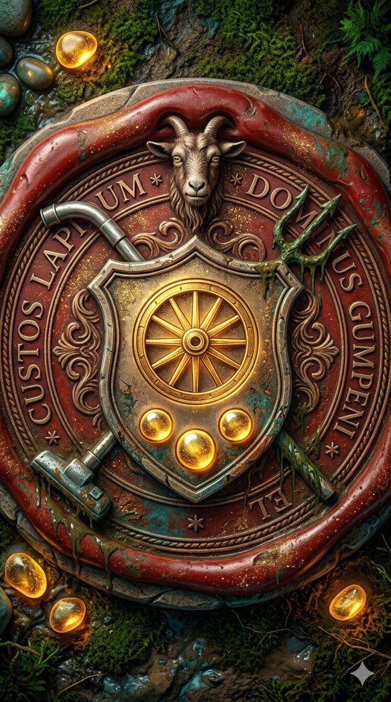
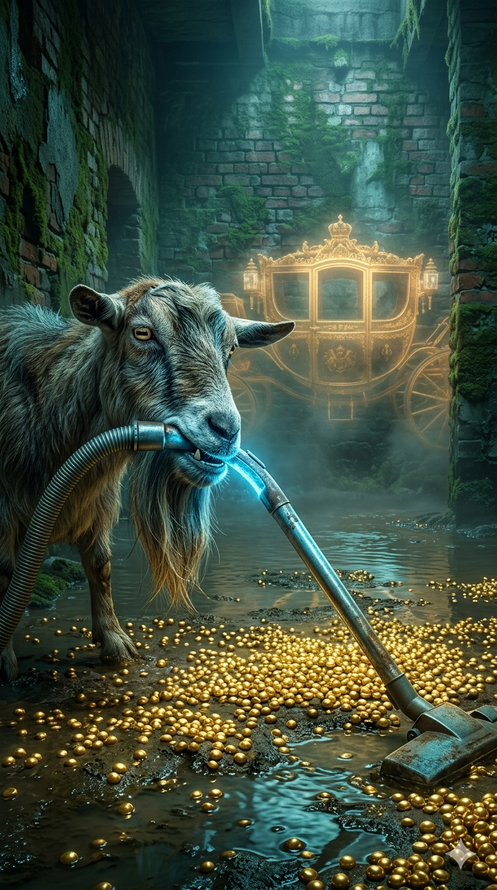
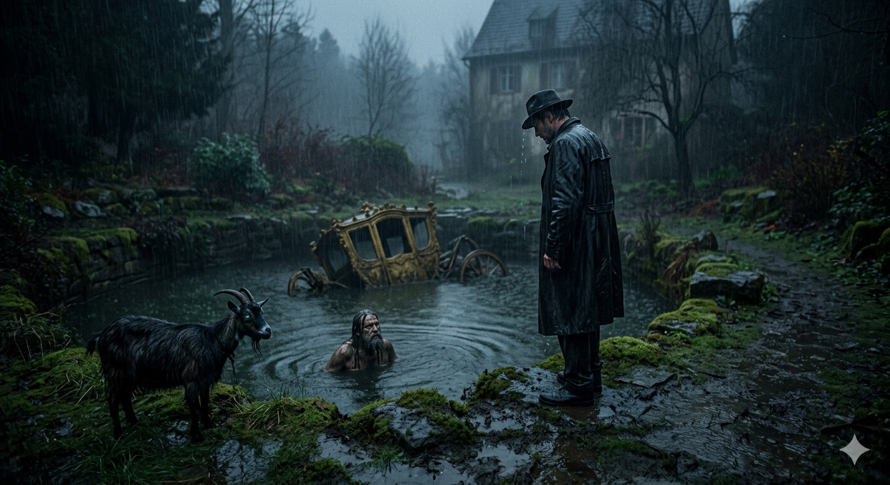
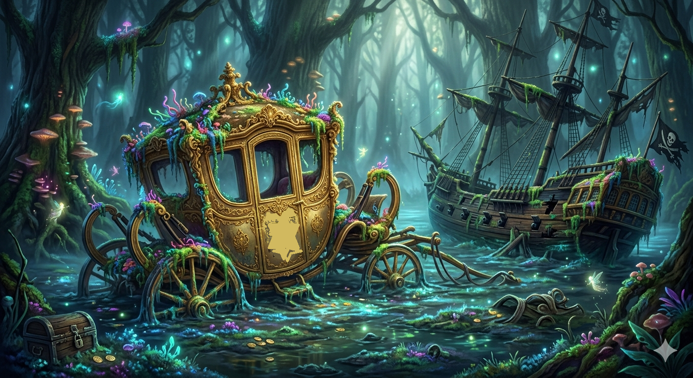
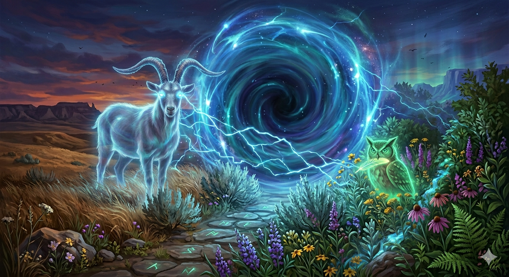
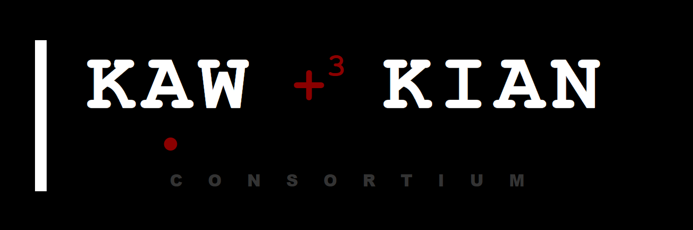

Bildgalerie & Illustrationen No*212
Fragmente aus dem Barock-Delta...

Das Siegel der Wächter

Die versunkene Pracht

Der Gumbeni-Wächter
Übergang ins Multiversum
„Glaubst du wirklich, dein Haus steht auf festem Boden?“
In der Moosgasse in Baden entpuppt sich ein harmloser Gartenbau als Eintritt in ein dreihundert Jahre altes, nasses Grab. Millionen leuchtender Kiesel sind die Akten eines vergessenen Reiches.
„Ein Buch wie ein Fluss: Es gluckst, es reißt dich mit und am Ende hast du nasse Füße und ein Lachen im Gesicht.“
Fragmente aus dem Barock-Delta...

Das Siegel der Wächter

Die versunkene Pracht
Der Gumbeni-Wächter
Übergang ins Multiversum
Bilder aus dem Moosbacher Märchen

Begegnung am Gulli

Die versunkene Pracht

Ziege
Eine Warnung an die Landratten: Bevor Sie dieses Multiversum betreten, kontrollieren Sie Ihre Schuhe. Wenn Sie fest an soliden Beton glauben, werden wir hier keine Freunde.
Dies ist kein historisches Gutachten, sondern die Wahrheit, die man hört, wenn man den Kopf tief genug in den badischen Schlamm steckt. Wir ehren die Sprache der Heimat und den Wahnsinn der Nachbarschaft.
Kai A. Wissmann & Victor Kian – Die Hüter des Barock-Deltas.
post@autoren-multiversum.de Autoren-Konsortium KAW & Kian HUB
